Full revision papers
Review Questions A–J
page 188Review Questions A
1. Name the five senses.
2. What is an Abacus?
3. Which are there more of—positive or negative integers?
4. What symbol in Propositional Algebra indicates that both conditions are necessary?
5. page 189 In these graphs of average speeds, say which is the faster, and by how many m.p.h., OA or OB? (Fig. 106.)
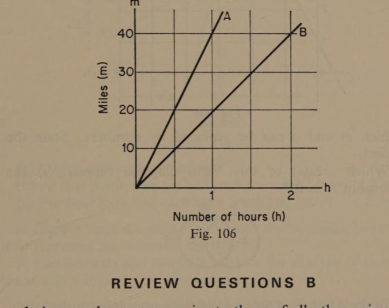
6. In a Venn diagram of two interlocked circles representing two conditions, how many areas are formed?
7. Represent the conditional relationship A′ ∧ B = 1 by means of a Venn diagram.
8. Construct the next four lines of Pascal’s Triangle. (1; 1 1)
9. Give the result of 5 × 8 to the Base of Twelve.
10. What is a bit?
Review Questions B
1. Are man’s senses superior to those of all other animals?
2. Translate this Roman number into Denary CXXXIX.
3. Give the results of these subtractions: (a) 3 − 4 = ; (b) −5 − (−2) = ; (c) 3 − (−8) = ; (d) 6 − (−2) =
4. Copy this unfinished diagram of a series circuit and complete it. The lamp must light only when both switches are closed, i.e. A ∧ B.
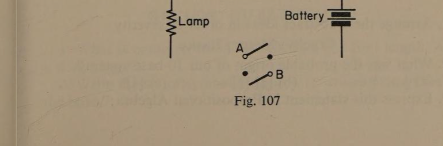
5. page 190 This graph illustrates a relationship between x and y in the form of y = mx + c, in which m and c can be replaced by numbers. State the equation.
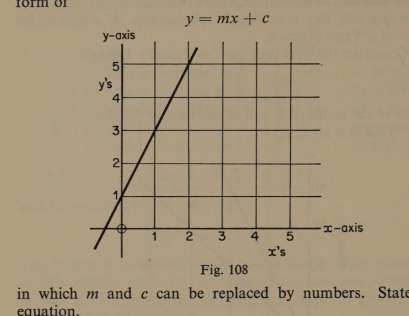
6. Which area(s) of this Venn diagram represent(s) the relationship A′ ∧ B′?
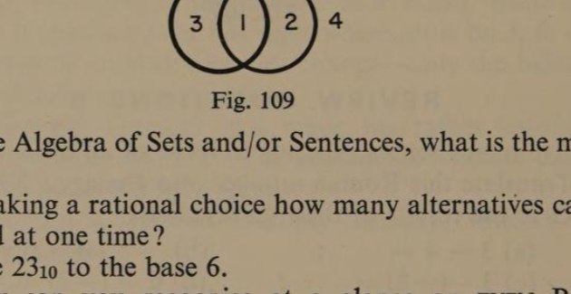
7. In the Algebra of Sets and/or Sentences, what is the meaning of ∅?
8. In making a rational choice how many alternatives can be considered at one time?
9. Write 23₁₀ to the base 6.
10. How can you recognise at a glance an even Binary number?
Review Questions C
1. Arrange these abstract ideas in order of severity: Cruelty; Mercy; Justice.
2. What was the probable origin of our 10-base system?
3. (a) ⅓ × ¼ = ; (b) [⅓][¼] = ; (c) [⅓]² =
4. Express this statement in Propositional Algebra: page 191 ‘I will go to the match provided I can get a ticket and it does not rain that evening.’
5. Study this travel-graph of two vehicles A and B:
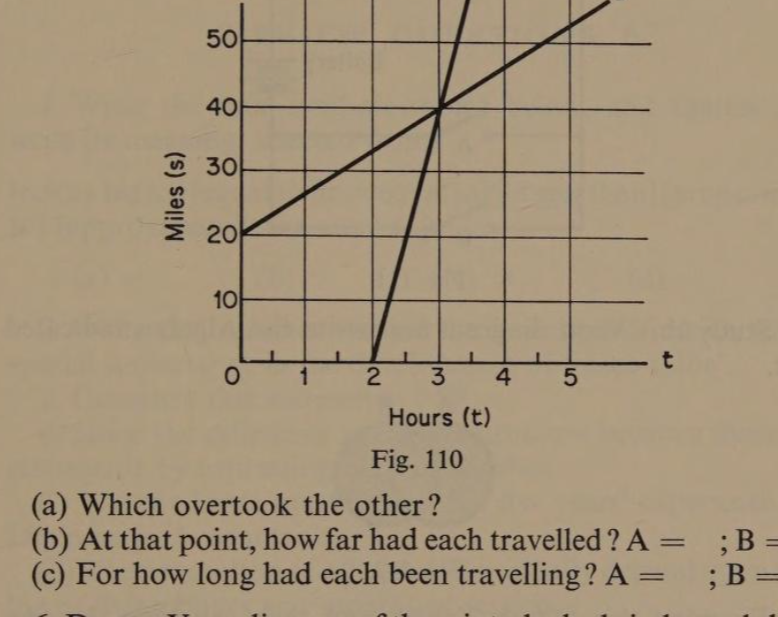
(a) Which overtook the other? (b) At that point, how far had each travelled? A = ; B = . (c) For how long had each been travelling? A = ; B = .
6. Draw a Venn diagram of three interlocked circles and shade it to represent this conjunction A′B′C′.
7. Use brackets and symbols to show the analysis of this sentence into a logical structure: ‘A number is exactly divisible by thirty, if and only if it is exactly divisible by two and by three and by five.’
8. At a wedding there were three couples, the newly weds, his parents, and hers. If husband and wife were never separate, how many photographs would have to be taken so as to obtain every possible grouping?
9. What were Napier’s Bones used for?
10. Write 2¹² as a power of eight.
Review Questions D
1. What is common to: A clockface; one foot length; and a dozen eggs?
2. Write the set of symbols required to write any number to the base 7.
3. page 192 Complete this statement: √(9/25) =
4. Write a logical statement in Propositional Algebra represented by the switch wiring of this circuit.
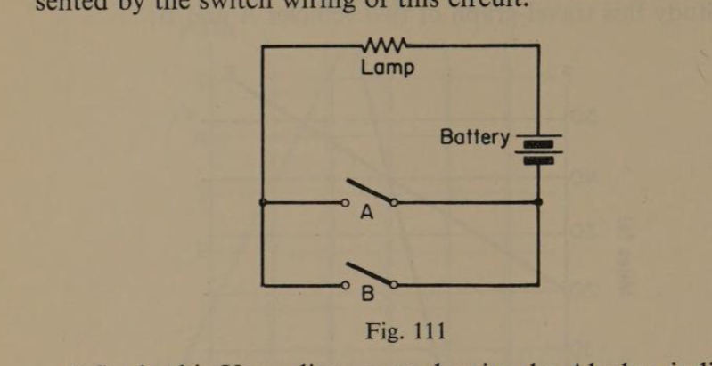
5. Study this Venn diagram and write the Algebra indicated by it.
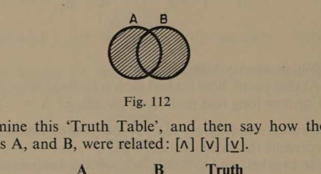
6. Examine this ‘Truth Table’, and then say how the two conditions A, and B, were related: [∧] [∨] [⊻].
| Condition A | Condition B | Truth |
|---|---|---|
| 1 | 0 | 0 |
| 0 | 0 | 0 |
| 1 | 1 | 1 |
| 0 | 1 | 0 |
7. What is meant by the complement of a logical statement?
8. In this Venn diagram, define the shaded area by the conjunction of three conditions in Propositional Algebra.
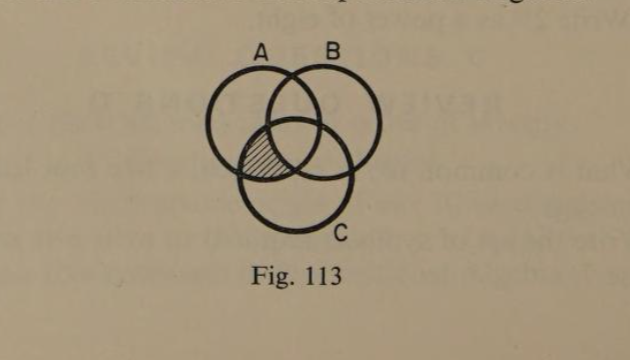
9. Write the number 43₈ in Denary.
10. State three ways of communicating with an Electronic Digital Computer.
Review Questions E
1. page 193 Write the four symbols shown below, and against each write its meaning, selected from: [not as big as] [equal to] [not equal to] [bigger than] [proportional to] [approximately the same as]
(a) = ; (b) > ; (c) ≠ ; (d) <
2. What is that number symbol the invention of which was of special importance in the development of ‘place-value’?
3. Complete this statement: [·5]² =
4. Show the difference in logical structure between these two statements by expressing each in Algebra. (i) The candidate must have either five years’ experience or a Diploma in Accountancy. (ii) The promotion of officers will normally depend upon their log of flying hours and months of service.
5. Draw the complement of this Venn diagram.
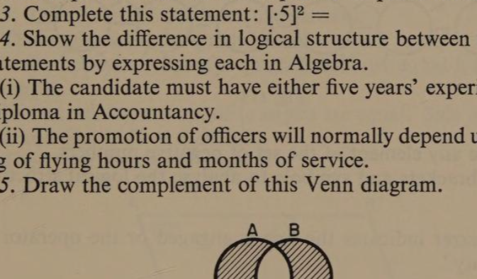
6. In how many ways can a diagram of four areas be shaded?
7. Write the complement of [A′ ∨ B].
8. Copy and complete this statement. ‘Three interlocked circles yield …… distinct areas. By shading them in different groups, the total number of patterns possible is …….’
9. Write the first eight Binary numbers.
10. Translate this Binary coding into Denary. (●○○●○○●●)
Review Questions F
1. page 194 Consider the expression: x + 10 > 7 + (−2) and then say what functions these symbols perform in it. (a) The first + sign is …… (b) The − sign is …… (c) The second + sign is …… (d) The > sign is …… Choose from [operator] [classifier] [relator]. (e) What is the least value x can have in this relationship?
2. If this row of lamps is in Binary coding, and a lit lamp represents 1, and an unlit lamp represents 0, what Denary number is indicated?
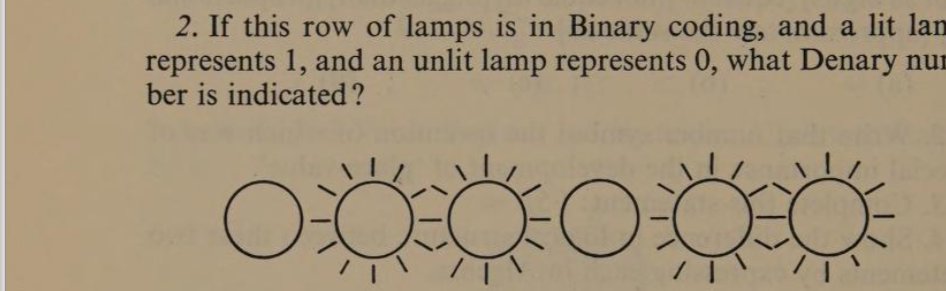
3. Write any element of the set of negative numbers.
4. Use brackets and symbols to analyse the logical structure of: ‘The buzzer indicates the line is engaged or the operator is not on duty.’
5. Translate this statement into: (a) Venn diagram; (b) Algebra: ‘I will buy the car if it has a drop-head and is not more than three years old.’
6. Which of these conditional relationships does the accompanying diagram represent? [A ∧ B ∧ C′] [A′ ∧ B′ ∧ C] [A′ ∧ B ∧ C′] [A ∧ B′ ∧ C]
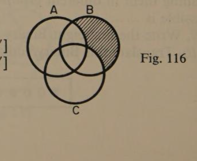
7. Complete this statement: A ∨ A′ =
8. In a ‘flow-chart’ what is the significance of the diamond-shaped frames?
9. page 195 Find the results of these four duodecimal calculations: Add 442 + 615; Subtract 49 − 32; Multiply 39 × ☉; Divide 9)739.
10. Code this binary register as 324₁₀. (0 0 0 0 0 0 0 0 0 0)
Review Questions G
1. The figure ABCD is a quadrilateral. The angle-sum of a quadrilateral = 360°. If the opposite sides are equal it is a parallelogram. In a parallelogram opposite angles are equal. Side AB = Side CD and Side AD = Side BC. Therefore the size of angle d is …… (with 70° at A).
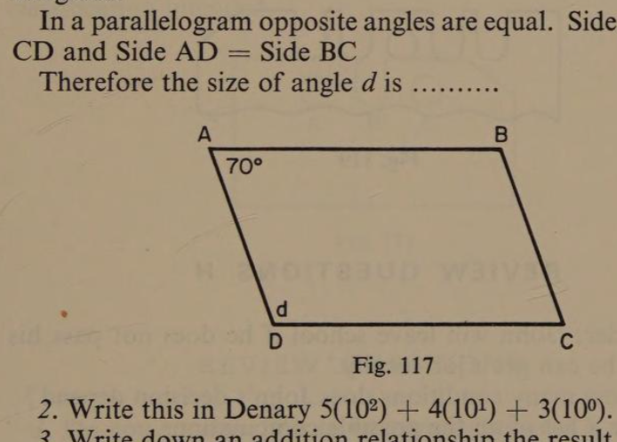
2. Write this in Denary 5(10⁵) + 4(10³) + 3(10⁰).
3. Write down an addition relationship the result of which is less than either of the numbers added.
4. If in an experiment the required state of a liquid is that its temperature must not be greater than 15°C and its Specific Gravity must not be more than 1·25, make a list of the four possible states of the liquid.
5. If the graph of this linear equation were drawn, say at what point the graph line would intersect the y axis. y = 4x + 2
6. page 196 Choose from these relationships those which correctly define the shaded area in the diagram. [A ∨ B] [A ⊻ B] [A′ ∧ B′]
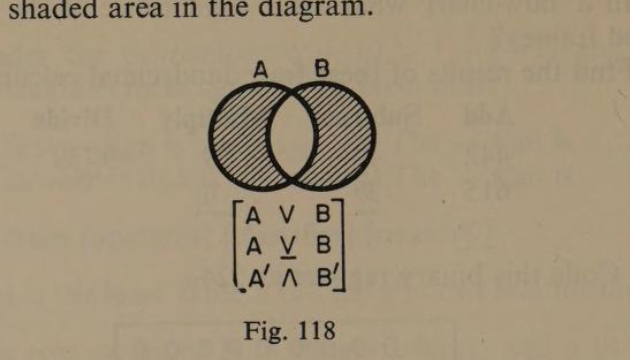
7. Complete this statement: A ∧ A′ =
8. Draw by means of two interlocked circles, suitably shaded, a diagram to represent AB ∨ A′B′ = 1.
9. Write 374₈ as a Binary number.
10. Imagine you are making a set of 5-hole punched and slotted cards in a Binary sequence. Draw the card which would follow immediately after the one shown here.
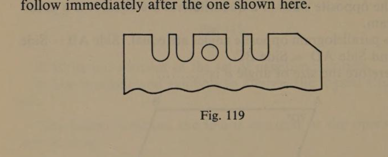
Review Questions H
1. Consider: ‘John will leave school if he does not pass his exam. and he can get a job locally.’ (a) On how many conditions does John’s decision depend? (b) Make a list of all the possible combinations. (c) Say which combination of circumstances will make him leave school. (d) Write this in Propositional Algebra. (e) Draw the diagram.
2. Complete: 10⁶ = ; 5² = ; 10⁰ = ; 5⁹ = ; n⁰ =
3. Which of these is a sub-set of the Set of Dogs? (a) Cats (b) Alsatians (c) Prince (d) My dog
4. page 197 Write in symbolic language the relationship in which two negative conditions are jointly effective.
5. Complete [A ∨ B] ↔
6. Write the statement in Propositional Algebra which the accompanying diagram illustrates.
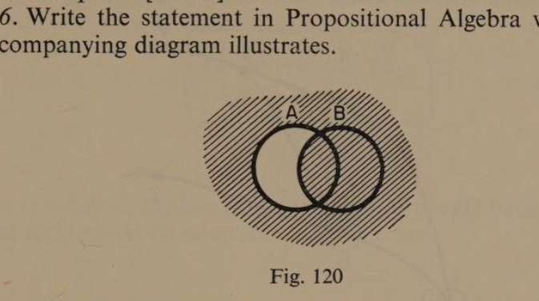
7. Is this a true statement? [A ∧ B]′ = A′B′.
8. Evaluate 2⁶ = ; 2⁰ = ; 2² = ; 2⁵ = ; 2⁷ =
9. Change 428₁₀ to base 7 by the process of continuous division.
10. Imagine the card illustrated is one of a set used for classification purposes with respect to 3 conditions. State the classification intended.
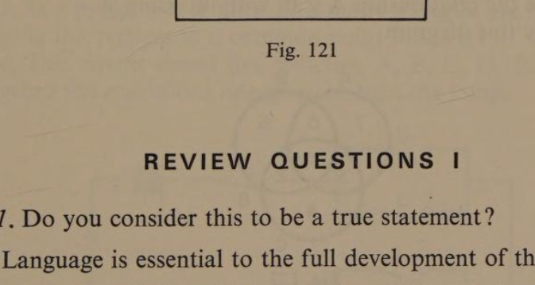
Review Questions I
1. Do you consider this to be a true statement? ‘Language is essential to the full development of the mind.’
2. If 313₄ = 2(4³) + 1(4¹) + 3(4⁰) = 32 + 4 + 3 = 39₁₀, translate 3214₅ into Denary.
3. In a polygon of n sides, how many triangles are formed by joining the vertices to a common point inside it?
4. Fig. 122 represents railway junctions. A and B are movable points. Main and branch positions are indicated by 1 and 0.
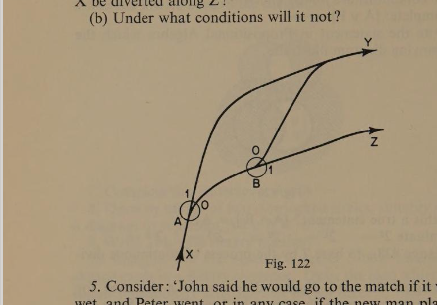
page 198 (a) Under what combinations of point settings will a train at X be diverted along Z? (b) Under what conditions will it not?
5. Consider: ‘John said he would go to the match if it was not wet, and Peter went, or in any case, if the new man played.’ Make out a list of all effective combinations and then state the proposition in Algebra. Let A = new man played, B = weather fine, and C = Peter went.
6. State: (a) The gradient of the graph of y = 4x − 3. (b) The point at which it will intersect the y-axis.
7. Write the relationship A ∨ B′ without using ∨.
8. Study this diagram. Complete this list: Area 1 = ABC, Area 5 = ABC′; Area 2 = , Area 6 = ; Area 3 = , Area 7 = ; Area 4 = , Area 8 = .
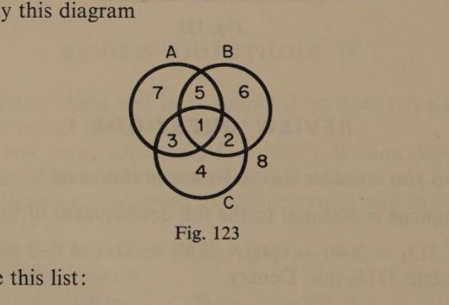
9. page 199 Do these Binary calculations: (i) 101 + 11 + 110 and (ii) 110 × 11.
10. If in the set of these index cards, the slot is cut when the age is reached, explain how the cards of people between thirty and forty could be selected.
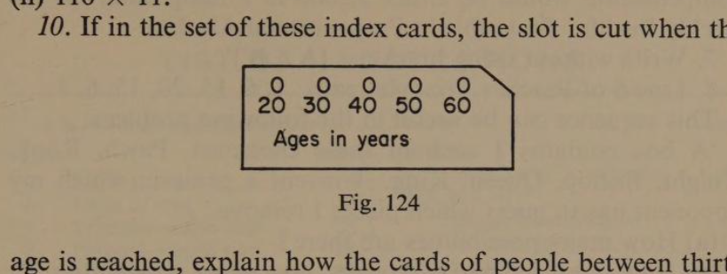
Review Questions J
1. Choose from the following the best definition of the mind: [the brain] [a function of the brain] [the memory].
2. This array of dots was grouped and recorded like this: 222. Can you say what number base was being used?
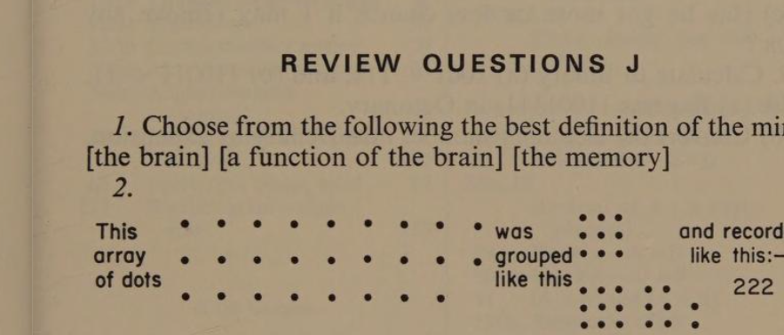
3. In a polygon of n sides, how many triangles are formed by joining the vertices to a common point inside it?
4. This circuit shows five switches, A, B, C, D, E. State in Algebra the conditions necessary to light the lamp.
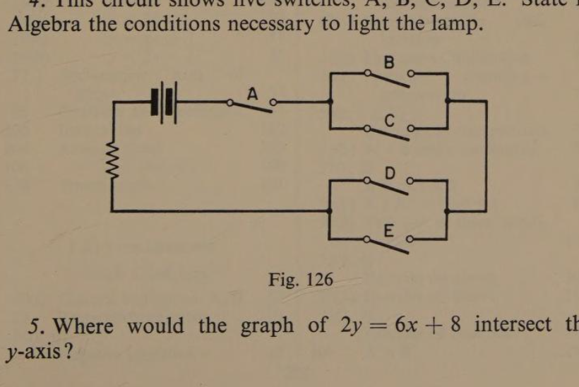
5. Where would the graph of 2y = 6x + 8 intersect the y-axis?
6. page 200 An insurance policy stated that for the loss of a limb, the compensation would be either $2,000 in a lump sum, or $10 weekly for life. State this in Propositional Algebra.
7. Write without using brackets: [A ∧ B]′.
8. Line 6 of Pascal’s Triangle reads: 1, 6, 15, 20, 15, 6, 1. This sequence can be useful in the following problem: ‘A box contains 1 each of these chessmen, Pawn, Rook, Knight, Bishop, Queen, King. I invent a game in which my opponent has to guess which pieces I remove.’ (a) How many possibilities are there? (b) If I am restricted to two pieces, how many possibilities are there? (c) Has he got more or less chance if I may remove any four?
9. Calculate in Binary (a) 1001 − 111, and (b) 110011 + 11.
10. (a) Express 1100111₂ in Octonary. (b) Convert the Octonary number into Denary by expansion.